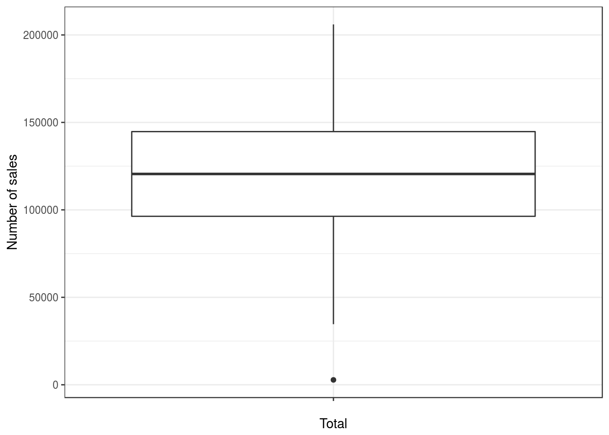

3 Data handling
This chapter covers the basics of data handling in R.
3.1 Basic data handling
3.1.1 Creating objects
Anything created in R is an object. You can assign values to objects using the assignment operator <-:
Note that comments may be included in the code after a #. The text after # is not evaluated when the code is run; they can be written directly after the code or in a separate line.
To see the value of an object, simply type its name into the console and hit enter:
## [1] "hello world"You can also explicitly tell R to print the value of an object:
## [1] "hello world"Note that because we assign characters in this case (as opposed to e.g., numeric values), we need to wrap the words in quotation marks, which must always come in pairs. Although RStudio automatically adds a pair of quotation marks (i.e., opening and closing marks) when you enter the opening marks it could be that you end up with a mismatch by accident (e.g., x <- "hello). In this case, R will show you the continuation character “+”. The same could happen if you did not execute the full command by accident. The “+” means that R is expecting more input. If this happens, either add the missing pair, or press ESCAPE to abort the expression and try again.
To change the value of an object, you can simply overwrite the previous value. For example, you could also assign a numeric value to “x” to perform some basic operations:
## [1] 2## [1] TRUE## [1] TRUE## [1] TRUE## [1] FALSENote that the name of the object is completely arbitrary. We could also define a second object “y”, assign it a different value and use it to perform some basic mathematical operations:
y <- 5 #assigns the value of 2 to the object x
x == y #checks whether the value of x to the value of y## [1] FALSE## [1] 10## [1] 7## [1] 31Object names
Please note that object names must start with a letter and can only contain letters, numbers, as well as the ., and _ separators. It is important to give your objects descriptive names and to be as consistent as possible with the naming structure. In this tutorial we will be using lower case words separated by underscores (e.g., object_name). There are other naming conventions, such as using a . as a separator (e.g., object.name), or using upper case letters (objectName). It doesn’t really matter which one you choose, as long as you are consistent.
3.1.2 Data types
The most important types of data are:
| Data type | Description |
|---|---|
| Numeric | Approximations of the real numbers, \(\normalsize\mathbb{R}\) (e.g., mileage a car gets: 23.6, 20.9, etc.) |
| Integer | Whole numbers, \(\normalsize\mathbb{Z}\) (e.g., number of sales: 7, 0, 120, 63, etc.) |
| Character | Text data (strings, e.g., product names) |
| Factor | Categorical data for classification (e.g., product groups) |
| Logical | TRUE, FALSE |
| Date | Date variables (e.g., sales dates: 21-06-2015, 06-21-15, 21-Jun-2015, etc.) |
Variables can be converted from one type to another using the appropriate functions (e.g., as.numeric(),as.integer(),as.character(), as.factor(),as.logical(), as.Date()). For example, we could convert the object y to character as follows:
## [1] "5"Notice how the value is in quotation marks since it is now of type character.
Entering a vector of data into R can be done with the c(x1,x2,..,x_n) (“concatenate”) command. In order to be able to use our vector (or any other variable) later on we want to assign it a name using the assignment operator <-. You can choose names arbitrarily (but the first character of a name cannot be a number). Just make sure they are descriptive and unique. Assigning the same name to two variables (e.g. vectors) will result in deletion of the first. Instead of converting a variable we can also create a new one and use an existing one as input. In this case we omit the as. and simply use the name of the type (e.g. factor()). There is a subtle difference between the two: When converting a variable, with e.g. as.factor(), we can only pass the variable we want to convert without additional arguments and R determines the factor levels by the existing unique values in the variable or just returns the variable itself if it is a factor already. When we specifically create a variable (just factor(), matrix(), etc.), we can and should set the options of this type explicitly. For a factor variable these could be the labels and levels, for a matrix the number of rows and columns and so on.
# Numeric:
top10_track_streams <- c(163608, 126687, 120480, 110022,
108630, 95639, 94690, 89011, 87869, 85599)
# Character:
top10_artist_names <- c("Axwell /\\ Ingrosso", "Imagine Dragons",
"J. Balvin", "Robin Schulz", "Jonas Blue", "David Guetta",
"French Montana", "Calvin Harris", "Liam Payne",
"Lauv") # Characters have to be put in ''
# Factor variable with two categories:
top10_track_explicit <- c(0, 0, 0, 0, 0, 0, 1, 1, 0,
0)
top10_track_explicit <- factor(top10_track_explicit,
levels = 0:1, labels = c("not explicit", "explicit"))
# Factor variable with more than two categories:
top10_artist_genre <- c("Dance", "Alternative", "Latino",
"Dance", "Dance", "Dance", "Hip-Hop/Rap", "Dance",
"Pop", "Pop")
top10_artist_genre <- as.factor(top10_artist_genre)
# Date:
top_10_track_release_date <- as.Date(c("2017-05-24",
"2017-06-23", "2017-07-03", "2017-06-30", "2017-05-05",
"2017-06-09", "2017-07-14", "2017-06-16", "2017-05-18",
"2017-05-19"))
# Logical
top10_track_explicit_1 <- c(FALSE, FALSE, FALSE, FALSE,
FALSE, FALSE, TRUE, TRUE, FALSE, FALSE)In order to “call” a vector we can now simply enter its name:
## [1] 163608 126687 120480 110022 108630 95639 94690 89011 87869 85599## [1] "2017-05-24" "2017-06-23" "2017-07-03" "2017-06-30" "2017-05-05"
## [6] "2017-06-09" "2017-07-14" "2017-06-16" "2017-05-18" "2017-05-19"In order to check the type of a variable the class() function is used.
## [1] "Date"3.1.3 Data structures
Now let’s create a table that contains the variables in columns and each observation in a row (like in SPSS or Excel). There are different data structures in R (e.g., Matrix, Vector, List, Array). In this course, we will mainly use data frames.

Data frames are similar to matrices but are more flexible in the sense that they may contain different data types (e.g., numeric, character, etc.), where all values of vectors and matrices have to be of the same type (e.g. character). It is often more convenient to use characters instead of numbers (e.g. when indicating a persons sex: “F”, “M” instead of 1 for female , 2 for male). Thus we would like to combine both numeric and character values while retaining the respective desired features. This is where “data frames” come into play. Data frames can have different types of data in each column. For example, we can combine the vectors created above in one data frame using data.frame(). This creates a separate column for each vector, which is usually what we want (similar to SPSS or Excel).
music_data <- data.frame(top10_track_streams, top10_artist_names,
top10_track_explicit, top10_artist_genre, top_10_track_release_date,
top10_track_explicit_1)3.1.3.1 Accessing data in data frames
When entering the name of a data frame, R returns the entire data frame:
Hint: You may also use the View()-function to view the data in a table format (like in SPSS or Excel), i.e. enter the command View(data). Note that you can achieve the same by clicking on the small table icon next to the data frame in the “Environment”-window on the right in RStudio.
Sometimes it is convenient to return only specific values instead of the entire data frame. There are a variety of ways to identify the elements of a data frame. One easy way is to explicitly state, which rows and columns you wish to view. The general form of the command is data.frame[rows,columns]. By leaving one of the arguments of data.frame[rows,columns] blank (e.g., data.frame[rows,]) we tell R that we want to access either all rows or columns, respectively. Here are some examples:
music_data[, c("top10_artist_names", "top_10_track_release_date")] # all rows and columns 'top10_artist_names' and 'top_10_track_release_date'music_data[1:5, c("top10_artist_names", "top_10_track_release_date")] # rows 1 to 5 and columns 'top10_artist_names'' and 'top_10_track_release_date'You may also create subsets of the data frame, e.g., using mathematical expressions:
music_data[top10_artist_names == "Robin Schulz", ] # returns all observations from artist 'Robin Schulz'The same can be achieved using the subset()-function
subset(music_data, top10_track_explicit == "explicit") # selects subsets of observations in a data frame# creates a new data frame that only contains
# tracks from genre 'Dance'
music_data_dance <- subset(music_data, top10_artist_genre ==
"Dance")
music_data_danceYou may also change the order of the variables in a data frame by using the order()-function
# Orders by genre (ascending) and streams
# (descending)
music_data[order(top10_artist_genre, -top10_track_streams),
]3.1.3.2 Inspecting the content of a data frame
The head() function displays the first X elements/rows of a vector, matrix, table, data frame or function.
The tail() function is similar, except it displays the last elements/rows.
names() returns the names of an R object. When, for example, it is called on a data frame, it returns the names of the columns.
## [1] "top10_track_streams" "top10_artist_names"
## [3] "top10_track_explicit" "top10_artist_genre"
## [5] "top_10_track_release_date" "top10_track_explicit_1"str() displays the internal structure of an R object. In the case of a data frame, it returns the class (e.g., numeric, factor, etc.) of each variable, as well as the number of observations and the number of variables.
## 'data.frame': 10 obs. of 6 variables:
## $ top10_track_streams : num 163608 126687 120480 110022 108630 ...
## $ top10_artist_names : chr "Axwell /\\ Ingrosso" "Imagine Dragons" "J. Balvin" "Robin Schulz" ...
## $ top10_track_explicit : Factor w/ 2 levels "not explicit",..: 1 1 1 1 1 1 2 2 1 1
## $ top10_artist_genre : Factor w/ 5 levels "Alternative",..: 2 1 4 2 2 2 3 2 5 5
## $ top_10_track_release_date: Date, format: "2017-05-24" "2017-06-23" ...
## $ top10_track_explicit_1 : logi FALSE FALSE FALSE FALSE FALSE FALSE ...nrow() and ncol() return the rows and columns of a data frame or matrix, respectively. dim() displays the dimensions of an R object.
## [1] 10## [1] 6## [1] 10 6ls() can be used to list all objects that are associated with an R object.
## [1] "top_10_track_release_date" "top10_artist_genre"
## [3] "top10_artist_names" "top10_track_explicit"
## [5] "top10_track_explicit_1" "top10_track_streams"3.1.3.3 Append and delete variables to/from data frames
To call a certain column in a data frame, we may also use the $ notation. For example, this returns all values associated with the variable “top10_track_streams”:
## [1] 163608 126687 120480 110022 108630 95639 94690 89011 87869 85599Assume that you wanted to add an additional variable to the data frame. You may use the $ notation to achieve this:
# Create new variable as the log of the number of
# streams
music_data$log_streams <- log(music_data$top10_track_streams)
# Create an ascending count variable which might
# serve as an ID
music_data$obs_number <- 1:nrow(music_data)
head(music_data)To delete a variable, you can simply create a subset of the full data frame that excludes the variables that you wish to drop:
music_data <- subset(music_data, select = -c(log_streams)) # deletes the variable log streams
head(music_data)You can also rename variables in a data frame, e.g., using the rename()-function from the plyr package. In the following code “::” signifies that the function “rename” should be taken from the package “plyr”. This can be useful if multiple packages have a function with the same name. Calling a function this way also means that you can access a function without loading the entire package via library().
library(plyr)
music_data <- plyr::rename(music_data, c(top10_artist_genre = "genre",
top_10_track_release_date = "release_date"))
head(music_data)Note that the same can be achieved using:
Or by referring to the index of the variable:
Note that the data handling approach explained in this chapter uses the so-called ‘base R’ dialect. There are other dialects in R, which are basically different ways of achieving the same thing. Two other popular dialects in R are ‘data.table’ and the ‘tidyverse’ see e.g., here and here. Once you become more advanced, you may want to look into the other dialects to achieve certain tasks more efficiently. For now, it is sufficient to be aware that there are other approaches to data handling and each dialect has it’s strengths and weaknesses. We will be mostly using ‘base R’ for the tutorial on this website.
3.2 Data import and export
Before you can start your analysis in R, you first need to import the data you wish to perform the analysis on. You will often be faced with different types of data formats (usually produced by some other statistical software like SPSS or Excel or a text editor). Fortunately, R is fairly flexible with respect to the sources from which data may be imported and you can import the most common data formats into R with the help of a few packages. R can, among others, handle data from the following sources:

In the previous chapter, we saw how we may use the keyboard to input data in R. In the following sections, we will learn how to import data from text files and other statistical software packages.
3.2.1 Getting data for this course
Most of the data sets we will be working with in this course will be stored in text files (i.e., .dat, .txt, .csv). All data sets we will be working with are stored in a repository on GitHub (similar to other cloud storage services such as Dropbox). You can directly import these data sets from GitHub without having to copy data sets from one place to another. If you know the location, where the files are stored, you may conveniently load the data directly from GitHub into R using the read.table() function. The header=TRUE argument indicates that the first line of data represents the header, i.e., it contains the names of the columns. The sep="\t"-argument specifies the delimiter (the character used to separate the columns), which is a TAB in this case.
test_data <- read.table("https://raw.githubusercontent.com/IMSMWU/Teaching/master/MRDA2017/test_data.dat",
sep = "\t", header = TRUE)
head(test_data)Note that it is also possible to download the data from the respective folder on the “Learn@WU” platform, placing it in the working directory and importing it from there. However, this requires an additional step to download the file manually first. If you chose this option, please remember to put the data file in the working directory first. If the import is not working, check your working directory setting using getwd(). Once you placed the file in the working directory, you can import it using the same command as above. Note that the file must be given as a character string (i.e., in quotation marks) and has to end with the file extension (e.g., .csv, .tsv, etc.).
3.2.2 Import data created by other software packages
Sometimes, you may need to import data files created by other software packages, such as Excel or SPSS. In this section we will use the readxl and haven packages to do this. To import a certain file you should first make sure that the file is stored in your current working directory. You can list all file names in your working directory using the list.files() function. If the file is not there, either copy it to your current working directory, or set your working directory to the folder where the file is located using setwd("/path/to/file"). This tells R the folder you are working in. Remember that you have to use / instead of \ to specify the path (if you use Windows paths copied from the explorer they will not work). When your file is in your working directory you can simply enter the filename into the respective import command. The import commands offer various options. For more details enter ?read_excel, ?read_spss after loading the packages.
# import excel files
library(readxl) #load package to import Excel files
excel_sheets("test_data.xlsx")
survey_data_xlsx <- read_excel("test_data.xlsx", sheet = "mrda_2016_survey") # 'sheet=x'' specifies which sheet to import
head(survey_data_xlsx)
library(haven) #load package to import SPSS files
# import SPSS files
survey_data_spss <- read_sav("test_data.sav")
head(survey_data_spss)The import of other file formats works in a very similar way (e.g., Stata, SAS). Please refer to the respective help-files (e.g., ?read_dta, ?read_sas …) if you wish to import data created by other software packages.
3.2.3 Import data from Qualtrics
There is also a dedicated package ‘qualtRics’ which lets you conveniently import data from surveys you conducted via Qualtrics. Simply export your data from Qualtrics as a .csv file (standard option) and you can read it into R as follows:
When you inspect the data frame in R after you imported the data, you will find that it has some additional information compared to a standard .csv file. For example, each question (column) has the question number that you assigned in Qualtrics but also the Question text as an additional label.
3.2.4 Export data
Exporting to different formats is also easy, as you can just replace “read” with “write” in many of the previously discussed functions (e.g. write.table(object, "file_name")). This will save the data file to the working directory. To check what the current working directory is you can use getwd(). By default, the write.table(object, "file_name")function includes the row number as the first variable. By specifying row.names = FALSE, you may exclude this variable since it doesn’t contain any useful information.
3.2.5 Import data from the Web
3.2.5.1 Scraping data from websites
Sometimes you may come across interesting data on websites that you would like to analyze. Reading data from websites is possible in R, e.g., using the rvest package. Let’s assume you would like to read a table that lists the population of different countries from this Wikipedia page. It helps to first inspect the structure of the website (e.g., using tools like SelectorGadget), so you know which elements you would like to extract. In this case it is fairly obvious that the data are stored in a table for which the associated html-tag is <table>. So let’s read the entire website using read_html(url) and filter all tables using read_html(html_nodes(...,"table")).
library(rvest)
url <- "https://en.wikipedia.org/wiki/List_of_countries_and_dependencies_by_population"
population <- read_html(url)
population <- html_nodes(population, "table.wikitable")
print(population)## {xml_nodeset (1)}
## [1] <table class="wikitable sortable"><tbody>\n<tr>\n<th>Rank</th>\n<th><a hr ...The output shows that there are two tables on the website and the first one appears to contain the relevant information. So let’s read the first table using the html_table() function. Note that population is of class “list”. A list is a vector that has other R objects (e.g., other vectors, data frames, matrices, etc.) as its elements. If we want to access the data of one of the elements, we have to use two square brackets on each side instead of just one (e.g., population[[1]] gets us the first table from the list of tables on the website; the argument fill = TRUE ensures that empty cells are replaced with missing values when reading the table).
population <- population[[1]] %>% html_table(fill = TRUE)
head(population) #checks if we scraped the desired dataYou can see that population is read as a character variable because of the commas.
## [1] "character"If we wanted to use this variable for some kind of analysis, we would first need to convert it to numeric format using the as.numeric() function. However, before we can do this, we can use the str_replace_all() function from the stringr package, which replaces all matches of a string. In our case, we would like to replace the commas (",") with nothing ("").
library(stringr)
population$Population <- as.numeric(str_replace_all(population$Population,
pattern = ",", replacement = "")) #convert to numeric
head(population) #checks if we scraped the desired dataNow the variable is of type “numeric” and could be used for analysis.
## [1] "numeric"3.2.5.2 Scraping data from APIs
3.2.5.2.1 Scraping data from APIs directly
Reading data from websites can be tricky since you need to analyze the page structure first. Many web-services (e.g., Facebook, Twitter, YouTube) actually have application programming interfaces (API’s), which you can use to obtain data in a pre-structured format. JSON (JavaScript Object Notation) is a popular lightweight data-interchange format in which data can be obtained. The process of obtaining data is visualized in the following graphic:

Obtaining data from APIs
The process of obtaining data from APIs consists of the following steps:
- Identify an API that has enough data to be relevant and reliable (e.g., www.programmableweb.com has >12,000 open web APIs in 63 categories).
- Request information by calling (or, more technically speaking, creating a request to) the API (e.g., R, python, php or JavaScript).
- Receive response messages, which is usually in JavaScript Object Notation (JSON) or Extensible Markup Language (XML) format.
- Write a parser to pull out the elements you want and put them into a of simpler format
- Store, process or analyze data according the marketing research question.
Let’s assume that you would like to obtain population data again. The World Bank has an API that allows you to easily obtain this kind of data. The details are usually provided in the API reference, e.g., here. You simply “call” the API for the desired information and get a structured JSON file with the desired key-value pairs in return. For example, the population for Austria from 1960 to 2019 can be obtained using this call. The file can be easily read into R using the fromJSON()-function from the jsonlite-package. Again, the result is a list and the second element ctrydata[[2]] contains the desired data, from which we select the “value” and “data” columns using the square brackets as usual [,c("value","date")]
library(jsonlite)
url <- "http://api.worldbank.org/v2/countries/AT/indicators/SP.POP.TOTL/?date=1960:2019&format=json&per_page=100" #specifies url
ctrydata <- fromJSON(url) #parses the data
str(ctrydata)## List of 2
## $ :List of 7
## ..$ page : int 1
## ..$ pages : int 1
## ..$ per_page : int 100
## ..$ total : int 60
## ..$ sourceid : chr "2"
## ..$ sourcename : chr "World Development Indicators"
## ..$ lastupdated: chr "2021-09-15"
## $ :'data.frame': 60 obs. of 8 variables:
## ..$ indicator :'data.frame': 60 obs. of 2 variables:
## .. ..$ id : chr [1:60] "SP.POP.TOTL" "SP.POP.TOTL" "SP.POP.TOTL" "SP.POP.TOTL" ...
## .. ..$ value: chr [1:60] "Population, total" "Population, total" "Population, total" "Population, total" ...
## ..$ country :'data.frame': 60 obs. of 2 variables:
## .. ..$ id : chr [1:60] "AT" "AT" "AT" "AT" ...
## .. ..$ value: chr [1:60] "Austria" "Austria" "Austria" "Austria" ...
## ..$ countryiso3code: chr [1:60] "AUT" "AUT" "AUT" "AUT" ...
## ..$ date : chr [1:60] "2019" "2018" "2017" "2016" ...
## ..$ value : int [1:60] 8879920 8840521 8797566 8736668 8642699 8546356 8479823 8429991 8391643 8363404 ...
## ..$ unit : chr [1:60] "" "" "" "" ...
## ..$ obs_status : chr [1:60] "" "" "" "" ...
## ..$ decimal : int [1:60] 0 0 0 0 0 0 0 0 0 0 ...3.2.5.2.2 Scraping data from APIs via R packages
An even more convenient way to obtain data from web APIs is to use existing R packages that someone else has already created. There are R packages available for various web-services. For example, the gtrendsR package can be used to conveniently obtain data from the Google Trends page. The gtrends() function is easy to use and returns a list of elements (e.g., “interest over time”, “interest by city”, “related topics”), which can be inspected using the ls() function. The following example can be used to obtain data for the search term “data science” in the US between September 1 and October 6:
library(gtrendsR)
# specify search term, area, source and time frame
google_trends <- gtrends("data science", geo = c("US"),
gprop = c("web"), time = "2012-09-01 2020-10-06")
# inspect trend over time data frame
head(google_trends$interest_over_time)Although we haven’t covered data visualization yet (see chapter 5), you could also easily plot the data to see the increasing trend for the search term we selected using the plot()-function. Note that the argument type = "b" indicates that both - a combination of line and points - should be used.

Another advantage of R is that it is open to user contributions. This often means that packages that allow users to collect data to investigate timely issues are available fairly quickly. As an example, consider the recent pandemic where many resources were made available via R packages to researchers (see here for an overview). For example, we might want to get information on the number of daily confirmed cases in the US on the state level. We could obtain this information in just one line of code using the ‘COVID19’ package.
## We have invested a lot of time and effort in creating COVID-19 Data Hub, please cite the following when using it:
##
## Guidotti, E., Ardia, D., (2020), "COVID-19 Data Hub", Journal of Open
## Source Software 5(51):2376, doi: 10.21105/joss.02376.
##
## A BibTeX entry for LaTeX users is
##
## @Article{,
## title = {COVID-19 Data Hub},
## year = {2020},
## doi = {10.21105/joss.02376},
## author = {Emanuele Guidotti and David Ardia},
## journal = {Journal of Open Source Software},
## volume = {5},
## number = {51},
## pages = {2376},
## }
##
## To retrieve citation and metadata of the data sources see ?covid19cite. To hide this message use 'verbose = FALSE'.Again, we could plot this data easily. In the following example, we first subset the data to the state of New York and then plot the development over time using the plot()-function. The argument type = "l" indicates that a line plot should be produced.
# plot data
plot(covid_data[covid_data$administrative_area_level_2 ==
"New York", c("date", "confirmed")], type = "l")
Learning check
(LC3.1) Which of the following are data types are recognized by R?
- Factor
- Date
- Decimal
- Vector
- None of the above
(LC3.2) What function should you use to check if an object is a data frame?
-
type() -
str() -
class() -
object.type() - None of the above
(LC3.3) You would like to combine three vectors (student, grade, date) in a data frame. What would happen when executing the following code?
student <- c("Max", "Jonas", "Saskia", "Victoria")
grade <- c(3, 2, 1, 2)
date <- as.Date(c("2020-10-06", "2020-10-08", "2020-10-09"))
df <- data.frame(student, grade, date)- Error because a data frame can not have different data types
-
Error because you should use
as.data.frame()instead ofdata.frame() - Error because all vectors need to have the same length
- Error because the column names are not specified
- This code should not report an error
You would like to analyze the following data frame
(LC3.4) How can you obtain Christina’s grade from the data frame?
-
df[4,2] -
df[2,4] -
df[student="Christina","grade"] -
df[student=="Christina","grade"] - None of the above
(LC3.5) How can you add a new variable ‘student_id’ to the data frame that assigns numbers to students in an ascending order?
-
df$student_id <- 1:nrow(df) -
df&student_id <- 1:nrow(df) -
df[,"student_id"] <- 1:nrow(df) -
df$student_id <- 1:length(df) - None of the above
(LC3.6) How could you obtain all rows with students who obtained a 1?
-
df[df$grade==1,] -
df[grade == min(df$grade),] -
df[,df$grade==1] -
df[grade==1,] - None of the above
(LC3.7) How could you create a subset of observations where the grade is not missing (NA)
-
df_subset <- df[grade!=NA,] -
df_subset <- df[isnot.na(grade),] -
df_subset <- df[!is.na(grade),] -
df_subset <- df[,grade!=NA] - None of the above
(LC3.8) What is the share of students with a grade better than 3?
-
df[grade<3,]/nrow(df) -
nrow(df[grade<3,])/length(df) -
nrow(df[grade<3,])/nrow(df) -
nrow(df[,grade<3])/nrow(df) - None of the above
(LC3.9) You would like to load a .csv file from your working directory. What function would you use do it?
-
read.table(file_name.csv) -
load.csv("file.csv") -
read.table("file.csv") -
get.table(file_name.csv) - None of the above
(LC3.10) After you loaded the file, you would like to inspect the types of data contained in it. How would you do it?
-
ncol(df) -
nrow(df) -
dim(df) -
str(df) - None of the above